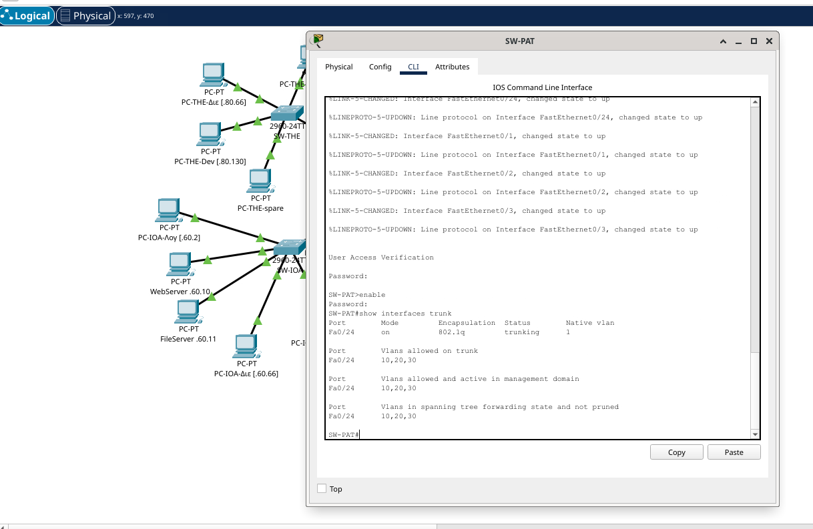

🔧 packet-tracer/configs/ — Network configs
Έτοιμα configurations για copy-paste στο Cisco Packet Tracer. Κάθε αρχείο φορτώνεται σε CLI της αντίστοιχης συσκευής.

Περιεχόμενα φακέλου
| Συσκευή | Παράρτημα | Ρόλος |
|---|---|---|
| R-IOA.txt | Ιωάννινα | Δρομολογητής — 2 WAN προς THE & PAT |
| R-THE.txt | Θεσσαλονίκη | Δρομολογητής — 2 WAN προς IOA & ATH |
| R-ATH.txt | Αθήνα | Δρομολογητής — 2 WAN προς THE & CHA (+ ACL 110 demo) |
| R-PAT.txt | Πάτρα | Δρομολογητής — 2 WAN προς IOA & CHA |
| R-CHA.txt | Χανιά | Δρομολογητής — 2 WAN προς ATH & PAT |
| SW-IOA.txt | Ιωάννινα | Switch — 3 VLAN access + trunk |
| SW-THE.txt | Θεσσαλονίκη | Switch — 3 VLAN access + trunk |
| SW-ATH.txt | Αθήνα | Switch — 3 VLAN access + trunk |
| SW-PAT.txt | Πάτρα | Switch — 3 VLAN access + trunk |
| SW-CHA.txt | Χανιά | Switch — 3 VLAN access + trunk |
Λήψη συνολικού οδηγού: 📥 README.txt
Εξοπλισμός στο Packet Tracer
- Routers: 5 × Cisco PT8200 (4 × GigabitEthernet built-in)
- Switches: 5 × Cisco 2960-24TT
- PCs: 15 × Generic PC-PT (3 ανά παράρτημα — ένα PC ανά τμήμα)
- Servers: 2 × Generic PC-PT στο παράρτημα Ιωαννίνων (WebServer + FileServer)
Κάθε router χρησιμοποιεί:
GigabitEthernet0/0/0→ LAN trunk προς το switch (router-on-a-stick με VLAN subinterfaces .10/.20/.30)GigabitEthernet0/0/1→ WAN προς γείτονα ΑGigabitEthernet0/0/2→ WAN προς γείτονα ΒGigabitEthernet0/0/3→ εφεδρικό (ασύνδετο)
Πώς φορτώνουμε ένα config σε μια συσκευή
- Διπλό κλικ πάνω στη συσκευή (router ή switch).
- Πάμε στην καρτέλα CLI.
- Πατάμε ENTER αν χρειάζεται για να εμφανιστεί το prompt.
- Στην ερώτηση «Continue with configuration dialog?» απαντάμε no.
- Πληκτρολογούμε:
enable configure terminal - Copy ολόκληρο το αντίστοιχο
.txtαρχείο (απόhostnameμέχριend) και paste στο CLI παράθυρο. - Αποθήκευση ώστε να επιβιώσει σε reboot:
copy running-config startup-config
Σειρά ρύθμισης (προτεινόμενη)
- Όλα τα switches πρώτα (SW-IOA → SW-THE → SW-ATH → SW-PAT → SW-CHA).
- Όλα τα routers μετά (R-IOA → R-THE → R-ATH → R-PAT → R-CHA).
- Στους PC βάζουμε IP/Mask/Gateway χειροκίνητα από Desktop → IP Configuration.
VLAN σχήμα (ίδιο σε κάθε παράρτημα)
| VLAN | Τμήμα | Υποδίκτυο | Router IP |
|---|---|---|---|
| 10 | Λογιστήριο | .0/26 | .1 |
| 20 | Διεύθυνση | .64/26 | .65 |
| 30 | Software Developers | .128/26 | .129 |
Παράδειγμα — PCs στο παράρτημα Αθήνας (LAN 200.1.100.0/24)
| PC | IP | Mask | Gateway |
|---|---|---|---|
| PC-Λογιστήριο-ATH | 200.1.100.10 | 255.255.255.192 | 200.1.100.1 |
| PC-Διεύθυνση-ATH | 200.1.100.74 | 255.255.255.192 | 200.1.100.65 |
| PC-SWDev-ATH | 200.1.100.138 | 255.255.255.192 | 200.1.100.129 |
Επαλήθευση λειτουργίας — screenshots
Πραγματικά screenshots από το Cisco Packet Tracer που αποδεικνύουν ότι η τοπολογία λειτουργεί σωστά:

show ip route ospf + show ip ospf neighbor στον R-IOA — όλα τα 15 LAN /26 υποδίκτυα έχουν μάθει μέσω OSPF, με δύο γείτονες σε κατάσταση FULL (router-id 2.2.2.2 και 4.4.4.4).

PC-CHA-Λογ προς WebServer @ 200.1.60.10 (Ιωάννινα) — 3/4 replies, TTL=125 (δύο router hops μέσω OSPF). Αποδεικνύει end-to-end συνδεσιμότητα μεταξύ παραρτημάτων.

show interfaces trunk στον SW-PAT — η θύρα Fa0/24 είναι trunk με encapsulation 802.1q, και επιτρέπει τα VLAN 10, 20, 30 (router-on-a-stick configuration).